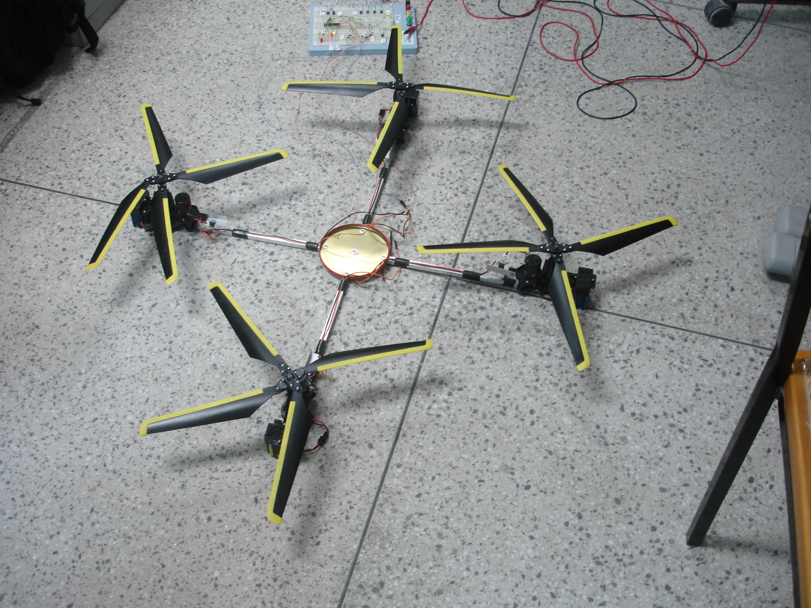
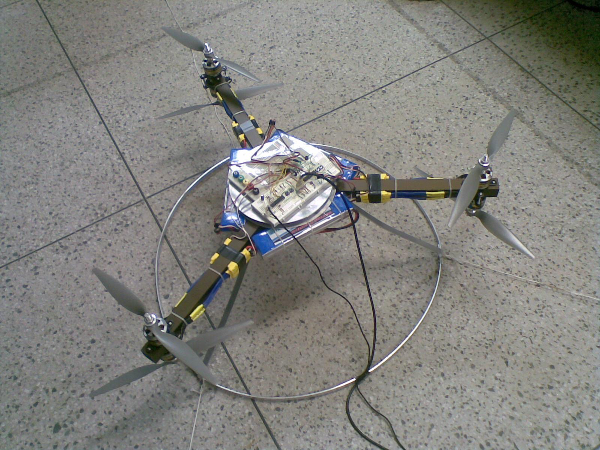

João Paulo F. Guimarães
Formação Acadêmica
Graduação
Engenharia de Computação
Universidade Federal do Rio Grande do Norte - UFRN
2005 - 2010
Laboratório de Robótica
Prótese Robótica
Laboratório de Robótica UFRN
Futebol de Robôs
Robôs com rodas
Eletrônica embarcada


(2010) TCC: Projeto de um Veículo Aéreo Não Tripulado para Supervisão de Instalações de Petróleo e Gás



Mestrado
Doutorado
Correntropia Complexa: Definição, Propriedades e Aplicações
Ph.D. Um guia ilustrado
Matt Might